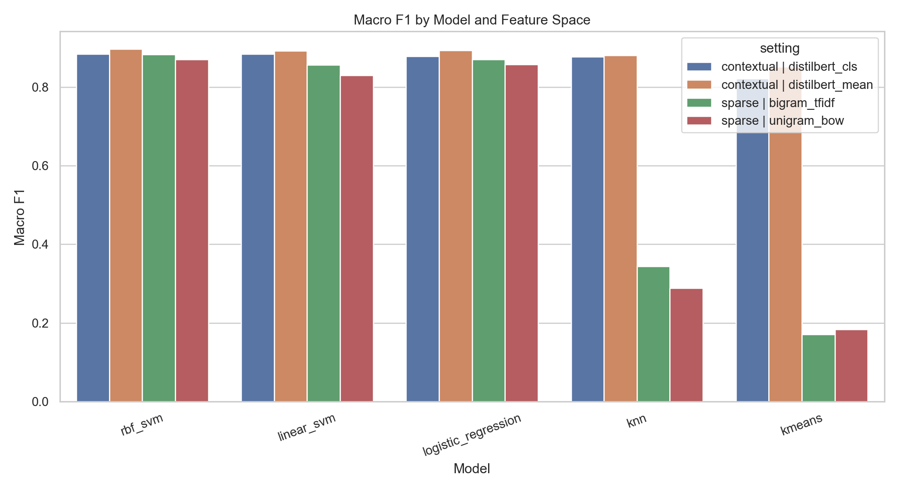

HACKATHON / AI01
SafeCross
An AI-based project for the Namma AI / NASSCOM hackathon. Its public source repository and implementation details are not available in the linked GitHub account.
Public source not available
B.TECH / DATA SCIENCE & AI / IIIT BANGALORE
I build machine-learning and AI systems, with projects in local graph-based RAG, NLP and agentic guardrails. I’m interested in practical applications of machine learning, deep learning and computer vision.
01 / PROFILE
A short introduction and the areas I’m exploring.
I’m a B.Tech student in Data Science & AI at IIIT Bangalore. I enjoy working across the path from data and models to usable software—from studying language models to building local AI applications and simulation tools.
02 / SELECTED WORK
Six projects, with source links where public repositories are available.
An AI-based project for the Namma AI / NASSCOM hackathon. Its public source repository and implementation details are not available in the linked GitHub account.
Public source not available
Combines entity-graph and vector retrieval to answer questions across local PDF, Markdown and text documents, grounded in source passages.
SourceA counterfactual F1 strategy simulator comparing pit-now, extend and compound-change decisions. Its race-state engine models tyre degradation, pit loss, traffic and safety-car scenarios; results are finish-position distributions.
SourceAn AG News study comparing sparse text features and classical models with contextual transformer embeddings, using reproducible training and evaluation stages.

Contributor to an upstream prompt-guardrail system that screens for risky or disguised instructions and routes them through validation and safe-intent rewriting. My public commits add a Streamlit dashboard, dataset utilities and UI updates.
Team project from an Aivancity AI workshop. The repository contains an end-to-end Kaggle House Prices regression workflow and separate responsible-AI and startup-analysis deliverables.
Source03 / IN-BROWSER ALGORITHM
Enter text to build a frequency tree, encode its UTF-8 bytes and decode the result in this browser.
This demonstrates the repository’s Huffman coding algorithm. It does not create the repository’s packed file format or metadata header.
Building the coding table…
04 / TOOLKIT
Technologies reflected in the public project repositories.
Python · Java · C++ · SQL
scikit-learn · PyTorch · Transformers · pandas
RAG · Knowledge graphs · Ollama · Prompt guardrails
ChromaDB · NetworkX · MySQL · Streamlit
05 / PROGRAMS
Participation and project work; no awards or rankings are implied.
SafeCross, an AI-based hackathon project. Public implementation details are not linked here.
A hybrid strategy-prediction and simulation project using race data, pace estimation and tyre/traffic heuristics.
AI and Big Data workshop project covering a House Prices regression workflow and responsible-AI analysis.
06 / GITHUB
Public repositories from GitHub, searchable by name, description or language.
07 / NEXT
A résumé PDF has not been added, so there is no download link yet.
Email and LinkedIn are not listed on the public profile. GitHub is the available public contact route.
GitHub profile